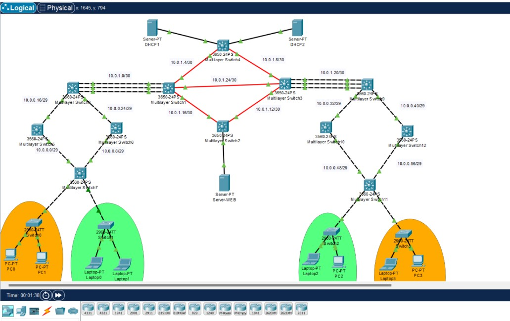
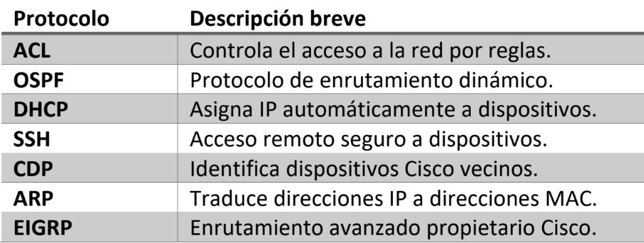

7 Packet Tracer: Formación de ingenieros para redes empresariales del mundo real.
Palabras clave: Packet Tracer, redes, formación, modelado, simulación, empresa.
7.1 Introducción
En el ámbito de redes y telecomunicaciones en el mundo actual, la simulación de entornos de redes juega un papel fundamental en la formación académica de ingenieros y en el desarrollo de su habilidad para presentar proyectos empresariales.
Packet Tracer, desarrollado y distribuido por Cisco, se ha convertido en una de las herramientas más utilizadas en la enseñanza académica y en una pieza clave para el aprendizaje del diseño de redes. La capacidad del software para simular entornos, desde muy básicos hasta complejos, permite tanto a profesionales como estudiantes adquirir experiencia práctica sin necesidad de hardware costoso.
7.2 Artículo
Cisco, el gigante de la industria, desarrolló el software Packet Tracer con el objetivo de permitir la simulación de redes en entornos controlados para sus trabajadores; sin embargo, alcanzó otro objetivo: democratizar y globalizar el aprendizaje de las redes. Con el segundo objetivo alcanzado cisco brinda el acceso a una herramienta avanzada y equipada para la enseñanza completa de distintas tecnologías para la conectividad disponible en cualquier parte del mundo [1].
Con el uso de esta herramienta, Cisco busca reducir la brecha educativa permitiendo que los estudiantes y profesionales de cualquier nivel puedan desarrollar habilidades prácticas en redes sin tener la necesidad de contar con laboratorios físicos costosos disponibles solo para instituciones con el capital suficiente monopolizando la educación [2].
Las empresas de todo tipo de telecomunicación requieren soluciones de redes eficientes y seguras y con packet tracer los profesionales pueden de forma efectiva presentar diseños de infraestructura. Los ingenieros pueden presentar y modelar topologías personalizadas, probar su funcionalidad y demostrar a las empresas como responderán sus modelos a diferentes condiciones a las que se sometan las propuestas [3]. De esta forma el mercado crece y la creatividad junto con la preparación profesional también y se extienden las oportunidades para cada interesado en el planeta.
Probar redes directamente en un entorno de producción real puede ser riesgoso y costoso para las empresas que las financian. Packet Tracer permite realizar las pruebas de rendimiento, seguridad y compatibilidad sin afectar la operatividad de una empresa en el proceso. La capacidad del software para simular fallos y al mismo tiempo analizar soluciones antes de implementarlas en un entorno físico ayuda a minimizar errores en el proceso y reducir costos hasta su implementación en productividad [1].

Figura 7.1: Red empresarial con uso de protocolo DHCP y DNS diseñada en Cisco Packet Tracer.
La configuración de redes en entornos empresariales reales requiere de conocimiento sólido de protocolos de enrutamiento, comunicación InterVLAN, seguridad con ACL’s o implementación de tecnologías que permitan aprovechar de mejor manera la infraestructura física de las empresas. Packet Tracer permite a los ingenieros de redes practicar la implementación de estos protocolos y tecnologías en un entorno virtual replicando escenarios reales sin riesgos ni costos adicionales [4][5]. La posibilidad de probar distintas configuraciones y soluciones de red ayuda a los profesionales a desarrollar habilidades críticas antes de aplicarlas en las infraestructuras empresariales.

Figura 7.2: Protocolos relevantes utilizados en la simulación de redes en el curso Redes de Computadoras 2 de la Facultad de Ingeniería
Con el auge de nuevas tecnologías emergentes y el proceso de digitalización de las empresas, los ingenieros en telecomunicaciones deben adaptarse rápidamente a cualquier tipo de desafío que surja. Packet Tracer siempre se mantiene actualizado con estándares en la industria en la simulación, por ejemplo, permite la práctica de escenarios en entornos que incluyen IoT, redes definidas por software (SDN) y prácticas de ciber seguridad avanzadas [4][5]. Esto garantiza que los profesionales estén preparados para afrontar demandas en el mercado laboral actual y futuro.
7.3 Conclusiones
Packet Tracer se ha consolidado como una herramienta esencial en la formación profesional de ingenieros de redes y en la presentación de propuestas empresariales. Su capacidad para simular redes reales permite a los estudiantes y profesionales modelar, presentar y evaluar proyectos sin riesgos ni costos elevados. En un mundo donde la conectividad y la seguridad de redes son prioritarias en el avance de la tecnología y la inclusión de estándares nuevos y tecnologías emergentes, Packet Tracer prepara a los ingenieros para enfrentar los desafíos actuales y futuros del mercado y dominarlo es una ventaja competitiva para cualquier ingeniero en redes y telecomunicaciones. La democratización del aprendizaje que ofrece este software contribuye a la reducción de la brecha educativa y al impulso del talento en el ámbito de las telecomunicaciones.
7.4 Referencias
[1] Cisco Networking Academy. “Cisco Packet Tracer.” Cisco Networking Academy. Última modificación 2024. netacad.com.
[2] Molina, Rubén, y Rodríguez, María. “Emuladores y simuladores de red, herramientas fundamentales en la formación de ingenieros.” Revista ANFEI, no. 13 (2021): 45-60. anfei.mx.
[3] Chicaiza Puedmag, Carlos Alexander. “Simulación de una red empresarial mediante la herramienta Cisco Packet Tracer.” Revista Odigos 2, no. 3 (2021): 99-117. doi.org.
[4] Iriarte, Leandro, Diego Encinas, y Martín Morales. “Uso de software de simulación en el dictado de la asignatura Redes de Computadoras.” IX Congreso de Tecnología en Educación y Educación en Tecnología, 12 y 13 de junio de 2014. sedici.unlp.edu.ar.
[5] Rodríguez, Nelson, Marcelo Moreno, y María Cecilia Gramajo. “Estudio de la influencia del uso de simulación en la enseñanza de redes de computadoras en el nivel universitario (resultados finales).” C.I.D.I.A. (Centro de Investigación, Desarrollo e Innovación Aplicada), 2021.
academia.edu.